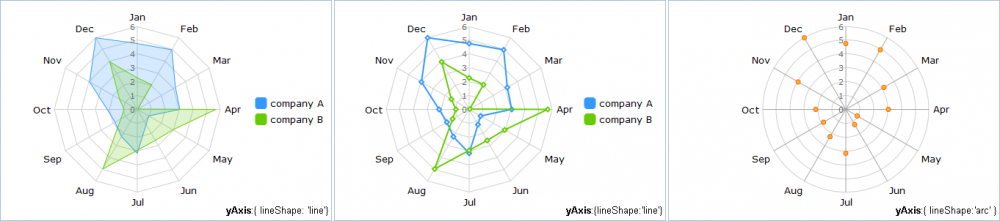

Radar Chart
A Radar Chart is a chart which plots the values of each item along a separate line that starts in the center of the chart and ends on the outer circle.

Let’s start to create a Radar Chart yourself step by step. You will have possibillity to improve it by adding additional functions and propeties.
In the beginning, make some preparatory steps.
1. Select data of any avaliable format to present it in your chart. In our example we will use Sales Information of two small companies in json format.
var data = [ { "companyA":"4.8", "companyB":"2.3", "month":"Jan" }, { "companyA":"5.0", "companyB":"2.1", "month":"Feb" }, { "companyA":"3.2", "companyB":"0.1", "month":"Mar" }, { "companyA":"3.1", "companyB":"5.7", "month":"Apr" }, { "companyA":"1.0", "companyB":"3.0", "month":"May" }, { "companyA":"1.3", "companyB":"2.6", "month":"Jun" } ];
2. Insert an HTML container to your page. It will contain your future chart. For example, use name “chart_container”.
<div id="chart_container" style="width:450px;height:300px;border:1px solid #A4BED4;"></div>
3. As the next step, set the chart type.
var radarChart = new dhtmlXChart({ view:"radar" .... })
4. Define 'chart_container' in the container property to set the chart container.
var radarChart = new dhtmlXChart({ view:"radar", container:"chart_container" ... })
5. Assign '#companyA#' to the value property to set data that Radar Chart will represent.
var radarChart = new dhtmlXChart({ view: "radar", container: "chart_container", value: "#companyA#" })
6. Specify points tooltip e.g. value '#companyA#' (property tooltip).
var radarChart = new dhtmlXChart({ view: "radar", container: "chart_container", value: "#companyA#", tooltip: "#month#" })
7. Specify the alpha property to make your chart some kind of transparent.
var radarChart = new dhtmlXChart({ view: "radar", container: "chart_container", value: "#companyA#", tooltip: "#month#", alpha:0.2 })
8. Set color and width for lines that will connect items values. Our values are '#96B0B8' and '1' (attributes 'color' and 'width' of the line property).
var radarChart = new dhtmlXChart({ view: "radar", container: "chart_container", value: "#companyA#", tooltip: "#companyA#", alpha:0.2, line:{ color:"#3399ff", width:1 } })
9. Name xAxis and choose scale data (attribute 'template' of the xAxis property).
var radarChart = new dhtmlXChart({ view: "radar", container: "chart_container", value: "#companyA#", tooltip: "#companyA#", alpha:0.2, line:{ color:"#3399ff", width:1 }, xAxis:{ template:"#month#" } })
10. To present scale circles as arc lines, specify the yAxis property and the lineShape attribute in it.
var radarChart = new dhtmlXChart({ view: "radar", container: "chart_container", value: "#companyA#", tooltip: "#companyA#", alpha:0.2, line:{ color:"#3399ff", width:1 }, xAxis:{ template:"#month#" }, yAxis:{ lineShape:'arc' } })
11. To fill the chart area with background color, enable the fill property and set the desired color of background through the color property.
var radarChart = new dhtmlXChart({ view: "radar", container: "chart_container", value: "#companyA#", tooltip: "#companyA#", alpha:0.2, line:{ color:"#3399ff", width:1 }, xAxis:{ template:"#month#" }, yAxis:{ lineShape:'arc' }, fill:true, color: "#3399ff" })
12. As we are filling the chart area, it will be better to not display items markers on the chart. So, set the disableItems property to true.
var radarChart = new dhtmlXChart({ view: "radar", container: "chart_container", value: "#companyA#", tooltip: "#companyA#", alpha:0.2, line:{ color:"#3399ff", width:1 }, xAxis:{ template:"#month#" }, yAxis:{ lineShape:'arc' }, fill:true, color: "#3399ff", disableItems:true })
13. To present data of two companies on one chart, call method addSeries() as shown below:
radarChart.addSeries({ value:"#companyB#", tooltip:{ template:"#companyB#" }, color:"#66cc00", line:{ color:"#66cc00", width:1 } })
14. Use method parse() to process data.
radarChart.parse(data,"json");
We've finished. Just run the application to see your creation (the source code of the app).